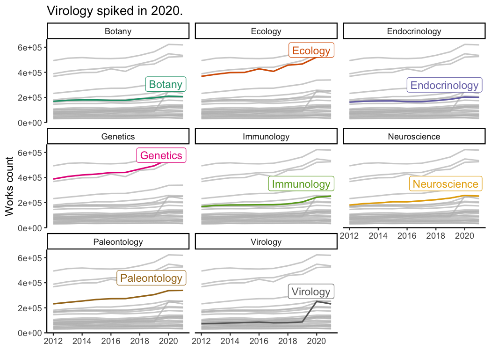
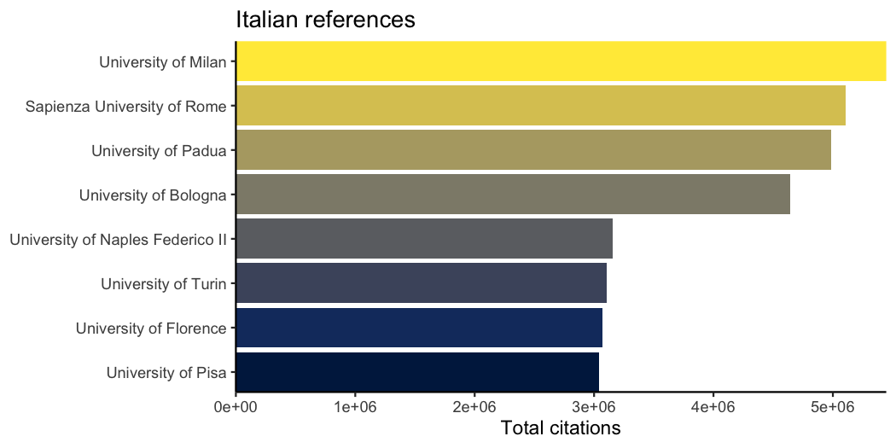
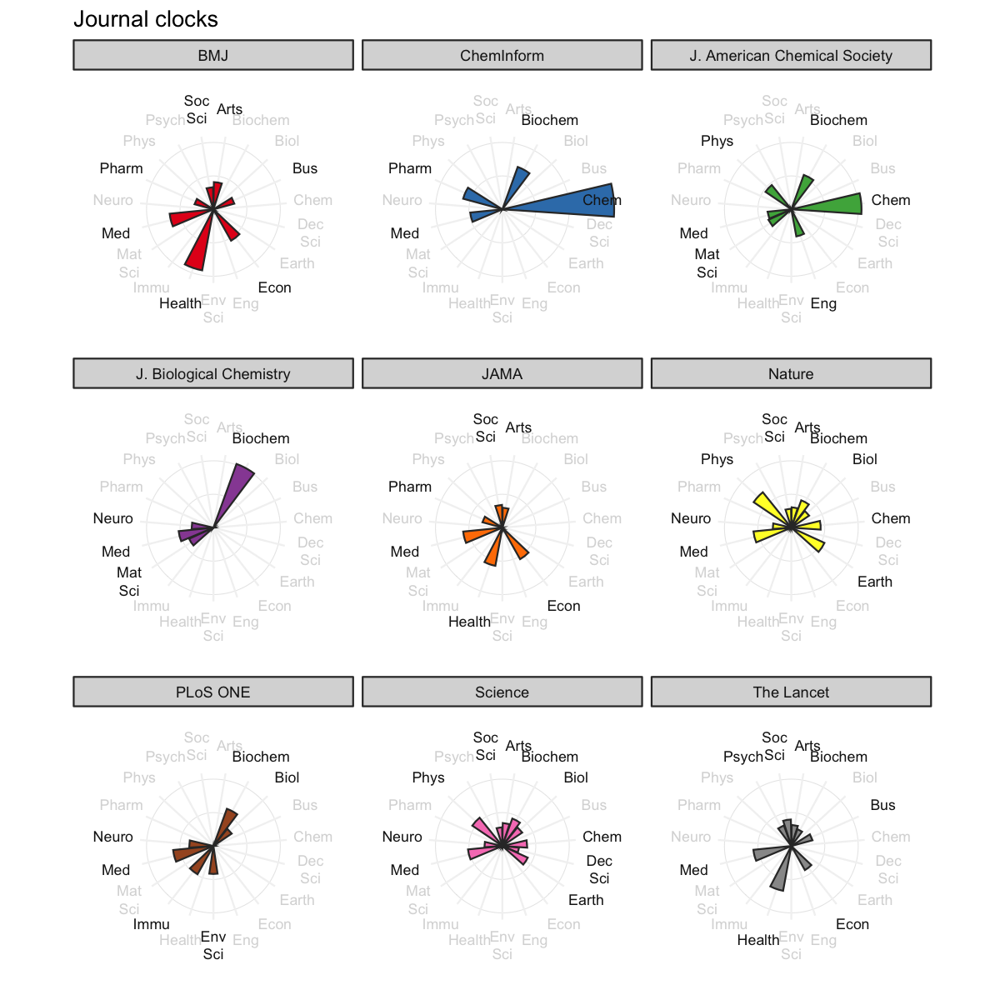
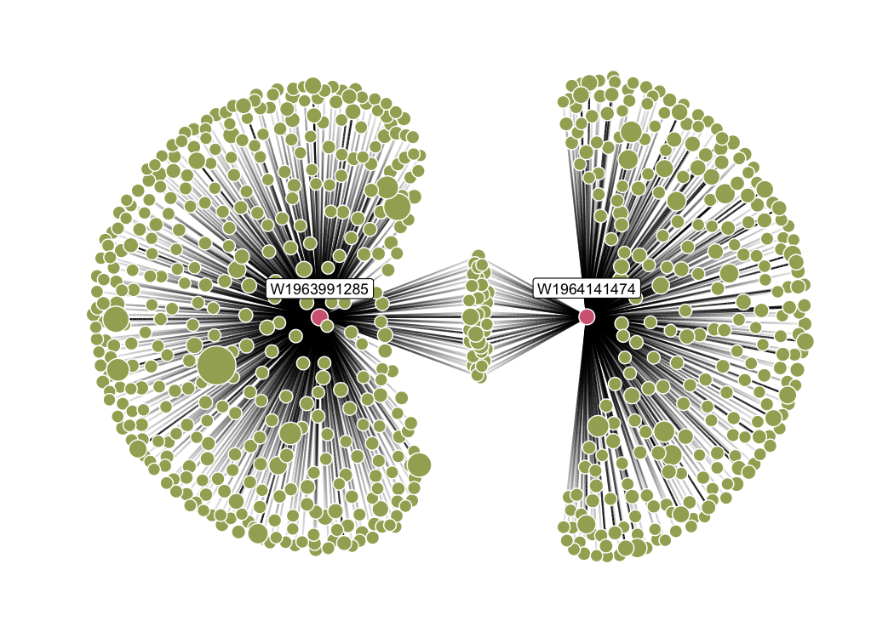

openalexR helps you interface with the OpenAlex API to retrieve bibliographic information about publications, authors, institutions, sources, funders, publishers, topics and concepts with 5 main functions:
oa_fetch: composes three functions below so the user can execute everything in one step, i.e.,oa_query |> oa_request |> oa2dfoa_query: generates a valid query, written following the OpenAlex API syntax, from a set of arguments provided by the user.oa_request: downloads a collection of entities matching the query created byoa_queryor manually written by the user, and returns a JSON object in a list format.oa2df: converts the JSON object in classical bibliographic tibble/data frame.oa_random: get random entity, e.g.,oa_random("works")gives a different work each time you run it
📜 Citation
If you use openalexR in research, please cite:
Aria, M., Le T., Cuccurullo, C., Belfiore, A. & Choe, J. (2024), openalexR: An R-Tool for Collecting Bibliometric Data from OpenAlex, The R Journal, 15(4), 167-180, DOI: https://doi.org/10.32614/RJ-2023-089.
🙌 Support OpenAlex
If OpenAlex has helped you, consider writing a Testimonial which will help support the OpenAlex team and show that their work is making a real and necessary impact.
⚙️ Setup
You can install the developer version of openalexR from GitHub with:
install.packages("remotes")
remotes::install_github("ropensci/openalexR")You can install the released version of openalexR from CRAN with:
install.packages("openalexR")Before we go any further, we highly recommend you set openalexR.mailto option so that your requests go to the polite pool for faster response times. If you have OpenAlex Premium, you can add your API key to the openalexR.apikey option as well. These lines best go into .Rprofile with file.edit("~/.Rprofile").
Alternatively, you can open .Renviron with file.edit("~/.Renviron") and add:
🌿 Examples
There are different filters/arguments you can use in oa_fetch, depending on which entity you’re interested in: works, authors, sources, funders, institutions, or concepts. We show a few examples below.
📚 Works
Goal: Download all information about a givens set of publications (known DOIs).
Use doi as a works filter:
works_from_dois <- oa_fetch(
entity = "works",
doi = c("10.1016/j.joi.2017.08.007", "https://doi.org/10.1007/s11192-013-1221-3"),
verbose = TRUE
)
#> Requesting url: https://api.openalex.org/works?filter=doi%3A10.1016%2Fj.joi.2017.08.007%7Chttps%3A%2F%2Fdoi.org%2F10.1007%2Fs11192-013-1221-3
#> Getting 1 page of results with a total of 2 records...We can view the output tibble/dataframe, works_from_dois, interactively in RStudio or inspect it with base functions like str or head. We also provide the experimental show_works function to simplify the result (e.g., remove some columns, keep first/last author) for easy viewing.
Note: the following table is wrapped in knitr::kable() to be displayed nicely in this README, but you will most likely not need this function.
# str(works_from_dois, max.level = 2)
# head(works_from_dois)
# show_works(works_from_dois)
works_from_dois |>
show_works() |>
knitr::kable()| id | display_name | first_author | last_author | so | url | is_oa | top_concepts |
|---|---|---|---|---|---|---|---|
| W2755950973 | bibliometrix : An R-tool for comprehensive science mapping analysis | Massimo Aria | Corrado Cuccurullo | Journal of Informetrics | https://doi.org/10.1016/j.joi.2017.08.007 | FALSE | Workflow, Bibliometrics, Software |
| W2038196424 | Coverage and adoption of altmetrics sources in the bibliometric community | Stefanie Haustein | Jens Terliesner | Scientometrics | https://doi.org/10.1007/s11192-013-1221-3 | FALSE | Altmetrics, Bookmarking, Social media |
Goal: Download all works given their PMIDs.
Use pmid as a filter:
works_from_pmids <- oa_fetch(
entity = "works",
pmid = c("14907713", 32572199),
verbose = TRUE
)
#> Requesting url: https://api.openalex.org/works?filter=pmid%3A14907713%7C32572199
#> Getting 1 page of results with a total of 2 records...
works_from_pmids |>
show_works() |>
knitr::kable()| id | display_name | first_author | last_author | so | url | is_oa | top_concepts |
|---|---|---|---|---|---|---|---|
| W1775749144 | PROTEIN MEASUREMENT WITH THE FOLIN PHENOL REAGENT | Oliver H. Lowry | ROSE J. RANDALL | Journal of Biological Chemistry | https://doi.org/10.1016/s0021-9258(19)52451-6 | TRUE | Reagent, Phenol |
| W3036882247 | Integrating spatial gene expression and breast tumour morphology via deep learning | Bryan He | James Zou | Nature Biomedical Engineering | https://doi.org/10.1038/s41551-020-0578-x | FALSE | Histopathology, Gene, Cancer |
Goal: Download all works published by a set of authors (known ORCIDs).
Use author.orcid as a filter (either canonical form with https://orcid.org/ or without will work):
works_from_orcids <- oa_fetch(
entity = "works",
author.orcid = c("0000-0001-6187-6610", "0000-0002-8517-9411"),
verbose = TRUE
)
#> Requesting url: https://api.openalex.org/works?filter=author.orcid%3A0000-0001-6187-6610%7C0000-0002-8517-9411
#> Getting 2 pages of results with a total of 259 records...
#> Warning in oa_request(oa_query(filter = filter_i, multiple_id = multiple_id, :
#> The following work(s) have truncated lists of authors: W4230863633.
#> Query each work separately by its identifier to get full list of authors.
#> For example:
#> lapply(c("W4230863633"), \(x) oa_fetch(identifier = x))
#> Details at https://docs.openalex.org/api-entities/authors/limitations.
works_from_orcids |>
show_works() |>
knitr::kable()| id | display_name | first_author | last_author | so | url | is_oa | top_concepts |
|---|---|---|---|---|---|---|---|
| W2755950973 | bibliometrix : An R-tool for comprehensive science mapping analysis | Massimo Aria | Corrado Cuccurullo | Journal of Informetrics | https://doi.org/10.1016/j.joi.2017.08.007 | FALSE | Workflow, Bibliometrics, Software |
| W2741809807 | The state of OA: a large-scale analysis of the prevalence and impact of Open Access articles | Heather Piwowar | Stefanie Haustein | PeerJ | https://doi.org/10.7717/peerj.4375 | TRUE | Citation, License, Bibliometrics |
| W2122130843 | Scientometrics 2.0: New metrics of scholarly impact on the social Web | Jason Priem | Bradely H. Hemminger | First Monday | https://doi.org/10.5210/fm.v15i7.2874 | FALSE | Bookmarking, Altmetrics, Social media |
| W1553564559 | Altmetrics in the wild: Using social media to explore scholarly impact | Jason Priem | Bradley M. Hemminger | arXiv (Cornell University) | https://arxiv.org/abs/1203.4745 | TRUE | Altmetrics, Social media, Citation |
| W3005144120 | Mapping the Evolution of Social Research and Data Science on 30 Years of Social Indicators Research | Massimo Aria | Maria Spano | Social Indicators Research | https://doi.org/10.1007/s11205-020-02281-3 | FALSE | Human geography, Data collection, Position (finance) |
| W3130540911 | altmetrics: a manifesto | Jason Priem | Cameron Neylon | NA | https://digitalcommons.unl.edu/cgi/viewcontent.cgi?article=1187&context=scholcom | FALSE | Altmetrics, Manifesto |
Goal: Download all works that have been cited more than 50 times, published between 2020 and 2021, and include the strings “bibliometric analysis” or “science mapping” in the title. Maybe we also want the results to be sorted by total citations in a descending order.
works_search <- oa_fetch(
entity = "works",
title.search = c("bibliometric analysis", "science mapping"),
cited_by_count = ">50",
from_publication_date = "2020-01-01",
to_publication_date = "2021-12-31",
options = list(sort = "cited_by_count:desc"),
verbose = TRUE
)
#> Requesting url: https://api.openalex.org/works?filter=title.search%3Abibliometric%20analysis%7Cscience%20mapping%2Ccited_by_count%3A%3E50%2Cfrom_publication_date%3A2020-01-01%2Cto_publication_date%3A2021-12-31&sort=cited_by_count%3Adesc
#> Getting 2 pages of results with a total of 372 records...
works_search |>
show_works() |>
knitr::kable()| id | display_name | first_author | last_author | so | url | is_oa | top_concepts |
|---|---|---|---|---|---|---|---|
| W3160856016 | How to conduct a bibliometric analysis: An overview and guidelines | Naveen Donthu | Weng Marc Lim | Journal of Business Research | https://doi.org/10.1016/j.jbusres.2021.04.070 | TRUE | Bibliometrics, Field (mathematics), Resource (disambiguation) |
| W3001491100 | Software tools for conducting bibliometric analysis in science: An up-to-date review | José A. Moral-Muñoz | Manuel J. Cobo | El Profesional de la Informacion | https://doi.org/10.3145/epi.2020.ene.03 | TRUE | Bibliometrics, Visualization, Set (abstract data type) |
| W3038273726 | Investigating the emerging COVID-19 research trends in the field of business and management: A bibliometric analysis approach | Surabhi Verma | Anders Gustafsson | Journal of Business Research | https://doi.org/10.1016/j.jbusres.2020.06.057 | TRUE | Bibliometrics, Field (mathematics), Empirical research |
| W3044902155 | Financial literacy: A systematic review and bibliometric analysis | Kirti Goyal | Satish Kumar | International Journal of Consumer Studies | https://doi.org/10.1111/ijcs.12605 | FALSE | Financial literacy, Content analysis, Citation |
| W3042215340 | A bibliometric analysis using VOSviewer of publications on COVID-19 | Yuetian Yu | Erzhen Chen | Annals of Translational Medicine | https://doi.org/10.21037/atm-20-4235 | TRUE | Citation, Bibliometrics, China |
| W3198357836 | Artificial intelligence and machine learning in finance: Identifying foundations, themes, and research clusters from bibliometric analysis | John W. Goodell | Debidutta Pattnaik | Journal of Behavioral and Experimental Finance | https://doi.org/10.1016/j.jbef.2021.100577 | FALSE | Scholarship, Valuation (finance), Corporate finance |
🧑 Authors
Goal: Download author information when we know their ORCID.
Here, instead of author.orcid like earlier, we have to use orcid as an argument. This may be a little confusing, but again, a different entity (authors instead of works) requires a different set of filters.
authors_from_orcids <- oa_fetch(
entity = "authors",
orcid = c("0000-0001-6187-6610", "0000-0002-8517-9411")
)
authors_from_orcids |>
show_authors() |>
knitr::kable()| id | display_name | orcid | works_count | cited_by_count | affiliation_display_name | top_concepts |
|---|---|---|---|---|---|---|
| A5069892096 | Massimo Aria | 0000-0002-8517-9411 | 197 | 10881 | University of Naples Federico II | Physiology, Pathology and Forensic Medicine, Periodontics |
| A5023888391 | Jason Priem | 0000-0001-6187-6610 | 62 | 3673 | OurResearch | Statistics, Probability and Uncertainty, Information Systems, Communication |
Goal: Acquire information on the authors of this package.
We can use other filters such as display_name and has_orcid:
authors_from_names <- oa_fetch(
entity = "authors",
display_name = c("Massimo Aria", "Jason Priem"),
has_orcid = TRUE
)
authors_from_names |>
show_authors() |>
knitr::kable()| id | display_name | orcid | works_count | cited_by_count | affiliation_display_name | top_concepts |
|---|---|---|---|---|---|---|
| A5069892096 | Massimo Aria | 0000-0002-8517-9411 | 197 | 10881 | University of Naples Federico II | Physiology, Pathology and Forensic Medicine, Periodontics |
| A5023888391 | Jason Priem | 0000-0001-6187-6610 | 62 | 3673 | OurResearch | Statistics, Probability and Uncertainty, Information Systems, Communication |
Goal: Download all authors’ records of scholars who work at the University of Naples Federico II (OpenAlex ID: I71267560) and have published at least 500 publications.
Let’s first check how many records match the query, then download the entire collection. We can do this by first defining a list of arguments, then adding count_only (default FALSE) to this list:
my_arguments <- list(
entity = "authors",
last_known_institutions.id = "I71267560",
works_count = ">499"
)
do.call(oa_fetch, c(my_arguments, list(count_only = TRUE)))
#> count db_response_time_ms page per_page
#> [1,] 44 81 1 1
if (do.call(oa_fetch, c(my_arguments, list(count_only = TRUE)))[1]>0){
do.call(oa_fetch, my_arguments) |>
show_authors() |>
knitr::kable()
}
#> Warning: Unknown or uninitialised column: `name`.
#> Warning: Unknown or uninitialised column: `display_name`.
#> Warning: Unknown or uninitialised column: `name`.
#> Warning: Unknown or uninitialised column: `display_name`.
#> Warning: Unknown or uninitialised column: `name`.
#> Warning: Unknown or uninitialised column: `display_name`.
#> Warning: Unknown or uninitialised column: `name`.
#> Warning: Unknown or uninitialised column: `display_name`.
#> Warning: Unknown or uninitialised column: `name`.
#> Warning: Unknown or uninitialised column: `display_name`.
#> Warning: Unknown or uninitialised column: `name`.
#> Warning: Unknown or uninitialised column: `display_name`.| id | display_name | orcid | works_count | cited_by_count | affiliation_display_name | top_concepts |
|---|---|---|---|---|---|---|
| A5106552509 | C. Sciacca | 0000-0002-8412-4072 | 3803 | 140341 | INFN Sezione di Napoli | |
| A5091797706 | L. Lista | 0000-0001-6471-5492 | 3730 | 162016 | INFN Sezione di Napoli | Nuclear and High Energy Physics, Nuclear and High Energy Physics, Nuclear and High Energy Physics |
| A5003544129 | Annamaria Colao | 0000-0001-6986-266X | 1305 | 44071 | University of Naples Federico II | Endocrinology, Diabetes and Metabolism, Endocrinology, Diabetes and Metabolism, Surgery |
| A5106315809 | M. Merola | 0000-0002-7082-8108 | 1194 | 66583 | INFN Sezione di Napoli | |
| A5026402548 | Gabriella Fabbrocini | 0000-0002-0064-1874 | 992 | 16411 | University of Naples Federico II | Dermatology, Immunology, Dermatology |
| A5064690950 | R. De Rosa | 0000-0002-4004-947X | 915 | 89676 | University of Naples Federico II | Astronomy and Astrophysics, Ocean Engineering, Astronomy and Astrophysics |
🍒 Example analyses
Goal: track the popularity of Biology concepts over time.
We first download the records of all level-1 concepts/keywords that concern over one million works:
library(gghighlight)
concept_df <- oa_fetch(
entity = "concepts",
level = 1,
ancestors.id = "https://openalex.org/C86803240", # Biology
works_count = ">1000000"
)
concept_df |>
select(display_name, counts_by_year) |>
tidyr::unnest(counts_by_year) |>
filter(year < 2022) |>
ggplot() +
aes(x = year, y = works_count, color = display_name) +
facet_wrap(~display_name) +
geom_line(linewidth = 0.7) +
scale_color_brewer(palette = "Dark2") +
labs(
x = NULL, y = "Works count",
title = "Virology spiked in 2020."
) +
guides(color = "none") +
gghighlight(
max(works_count) > 200000,
min(works_count) < 400000,
label_params = list(nudge_y = 10^5, segment.color = NA)
)
#> label_key: display_name
Goal: Rank institutions in Italy by total number of citations.
We want download all records regarding Italian institutions (country_code:it) that are classified as educational (type:education). Again, we check how many records match the query then download the collection:
italy_insts <- oa_fetch(
entity = "institutions",
country_code = "it",
type = "education",
verbose = TRUE
)
#> Requesting url: https://api.openalex.org/institutions?filter=country_code%3Ait%2Ctype%3Aeducation
#> Getting 2 pages of results with a total of 232 records...
italy_insts |>
slice_max(cited_by_count, n = 8) |>
mutate(display_name = forcats::fct_reorder(display_name, cited_by_count)) |>
ggplot() +
aes(x = cited_by_count, y = display_name, fill = display_name) +
geom_col() +
scale_fill_viridis_d(option = "E") +
guides(fill = "none") +
labs(
x = "Total citations", y = NULL,
title = "Italian references"
) +
coord_cartesian(expand = FALSE)
And what do they publish on?
# The package wordcloud needs to be installed to run this chunk
# library(wordcloud)
concept_cloud <- italy_insts |>
select(inst_id = id, topics) |>
tidyr::unnest(topics) |>
filter(name == "field") |>
select(display_name, count) |>
group_by(display_name) |>
summarise(score = sqrt(sum(count)))
pal <- c("black", scales::brewer_pal(palette = "Set1")(5))
set.seed(1)
wordcloud::wordcloud(
concept_cloud$display_name,
concept_cloud$score,
scale = c(2, .4),
colors = pal
)Goal: Visualize big journals’ topics.
We first download all records regarding journals that have published more than 300,000 works, then visualize their scored concepts:
# The package ggtext needs to be installed to run this chunk
# library(ggtext)
jours_all <- oa_fetch(
entity = "sources",
works_count = ">200000",
verbose = TRUE
)
clean_journal_name <- function(x) {
x |>
gsub("\\(.*?\\)", "", x = _) |>
gsub("Journal of the|Journal of", "J.", x = _) |>
gsub("/.*", "", x = _)
}
jours <- jours_all |>
filter(type == "journal") |>
slice_max(cited_by_count, n = 9) |>
distinct(display_name, .keep_all = TRUE) |>
select(jour = display_name, topics) |>
tidyr::unnest(topics) |>
filter(name == "field") |>
group_by(id, jour, display_name) |>
summarise(score = (sum(count))^(1/3), .groups = "drop") |>
left_join(concept_abbrev, by = join_by(id, display_name)) |>
mutate(
abbreviation = gsub(" ", "<br>", abbreviation),
jour = clean_journal_name(jour),
) |>
tidyr::complete(jour, abbreviation, fill = list(score = 0)) |>
group_by(jour) |>
mutate(
color = if_else(score > 10, "#1A1A1A", "#D9D9D9"), # CCCCCC
label = paste0("<span style='color:", color, "'>", abbreviation, "</span>")
) |>
ungroup()
jours |>
ggplot() +
aes(fill = jour, y = score, x = abbreviation, group = jour) +
facet_wrap(~jour) +
geom_hline(yintercept = c(25, 50), colour = "grey90", linewidth = 0.2) +
geom_segment(
aes(x = abbreviation, xend = abbreviation, y = 0, yend = 55),
color = "grey95"
) +
geom_col(color = "grey20") +
coord_polar(clip = "off") +
theme_bw() +
theme(
plot.background = element_rect(fill = "transparent", colour = NA),
panel.background = element_rect(fill = "transparent", colour = NA),
panel.grid = element_blank(),
panel.border = element_blank(),
axis.text = element_blank(),
axis.ticks.y = element_blank()
) +
ggtext::geom_richtext(
aes(y = 75, label = label),
fill = NA, label.color = NA, size = 3
) +
scale_fill_brewer(palette = "Set1", guide = "none") +
labs(y = NULL, x = NULL, title = "Journal clocks")
❄️ Snowball search
The user can also perform snowballing with oa_snowball. Snowballing is a literature search technique where the researcher starts with a set of articles and find articles that cite or were cited by the original set. oa_snowball returns a list of 2 elements: nodes and edges. Similar to oa_fetch, oa_snowball finds and returns information on a core set of articles satisfying certain criteria, but, unlike oa_fetch, it also returns information the articles that cite and are cited by this core set.
# The packages ggraph and tidygraph need to be installed to run this chunk
library(ggraph)
library(tidygraph)
#>
#> Attaching package: 'tidygraph'
#> The following object is masked from 'package:stats':
#>
#> filter
snowball_docs <- oa_snowball(
identifier = c("W1964141474", "W1963991285"),
verbose = TRUE
)
#> Requesting url: https://api.openalex.org/works?filter=openalex%3AW1964141474%7CW1963991285
#> Getting 1 page of results with a total of 2 records...
#> Collecting all documents citing the target papers...
#> Requesting url: https://api.openalex.org/works?filter=cites%3AW1963991285%7CW1964141474
#> Getting 3 pages of results with a total of 593 records...
#> Collecting all documents cited by the target papers...
#> Requesting url: https://api.openalex.org/works?filter=cited_by%3AW1963991285%7CW1964141474
#> Getting 1 page of results with a total of 94 records...
ggraph(graph = as_tbl_graph(snowball_docs), layout = "stress") +
geom_edge_link(aes(alpha = after_stat(index)), show.legend = FALSE) +
geom_node_point(aes(fill = oa_input, size = cited_by_count), shape = 21, color = "white") +
geom_node_label(aes(filter = oa_input, label = id), nudge_y = 0.2, size = 3) +
scale_edge_width(range = c(0.1, 1.5), guide = "none") +
scale_size(range = c(3, 10), guide = "none") +
scale_fill_manual(values = c("#a3ad62", "#d46780"), na.value = "grey", name = "") +
theme_graph() +
theme(
plot.background = element_rect(fill = "transparent", colour = NA),
panel.background = element_rect(fill = "transparent", colour = NA),
legend.position = "bottom"
) +
guides(fill = "none")
🌾 N-grams
Update 2024-09-15: The n-gram API endpoint is not currently in service. The following code chunk is not evaluated.
OpenAlex offers (limited) support for fulltext N-grams of Work entities (these have IDs starting with "W"). Given a vector of work IDs, oa_ngrams returns a dataframe of N-gram data (in the ngrams list-column) for each work.
ngrams_data <- oa_ngrams(
works_identifier = c("W1964141474", "W1963991285"),
verbose = TRUE
)
ngrams_data
lapply(ngrams_data$ngrams, head, 3)
ngrams_data |>
tidyr::unnest(ngrams) |>
filter(ngram_tokens == 2) |>
select(id, ngram, ngram_count) |>
group_by(id) |>
slice_max(ngram_count, n = 10, with_ties = FALSE) |>
ggplot(aes(ngram_count, forcats::fct_reorder(ngram, ngram_count))) +
geom_col(aes(fill = id), show.legend = FALSE) +
facet_wrap(~id, scales = "free_y") +
labs(
title = "Top 10 fulltext bigrams",
x = "Count",
y = NULL
)oa_ngrams can sometimes be slow because the N-grams data can get pretty big, but given that the N-grams are "cached via CDN"](https://docs.openalex.org/api-entities/works/get-n-grams#api-endpoint), you may also consider parallelizing for this special case (oa_ngrams does this automatically if you have {curl} >= v5.0.0).
💫 About OpenAlex
Schema credits: @dhimmel
OpenAlex is a fully open catalog of the global research system. It’s named after the ancient Library of Alexandria. The OpenAlex dataset describes scholarly entities and how those entities are connected to each other. There are five types of entities:
Works are papers, books, datasets, etc; they cite other works
Authors are people who create works
Sources are journals and repositories that host works
Institutions are universities and other orgs that are affiliated with works (via authors)
Concepts tag Works with a topic
🤝 Code of Conduct
Please note that this package is released with a Contributor Code of Conduct. By contributing to this project, you agree to abide by its terms.
👓 Acknowledgements
Package hex was made with Midjourney and thus inherits a CC BY-NC 4.0 license.